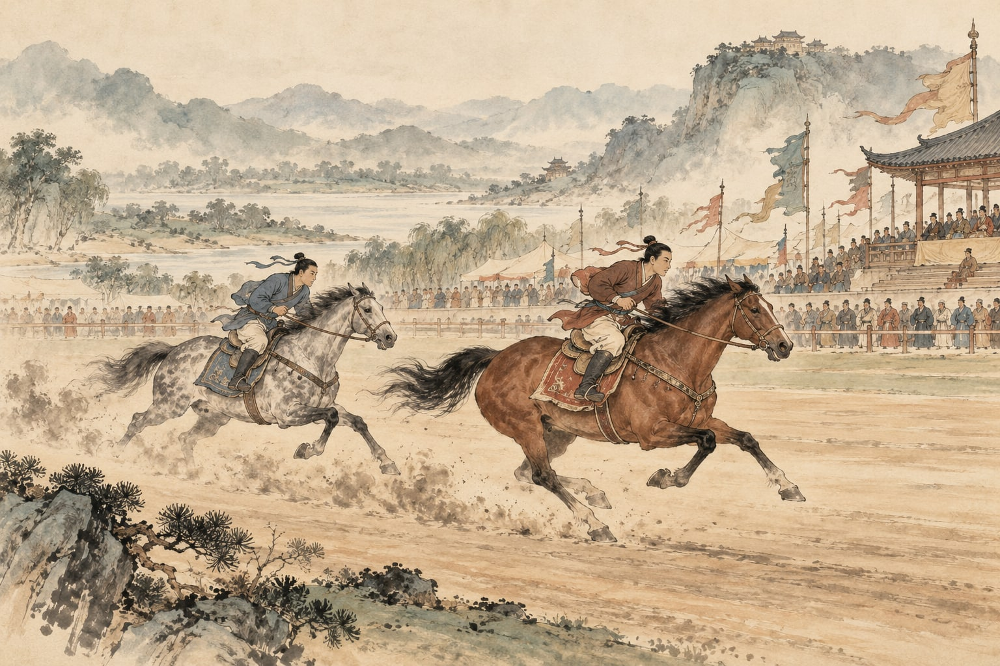
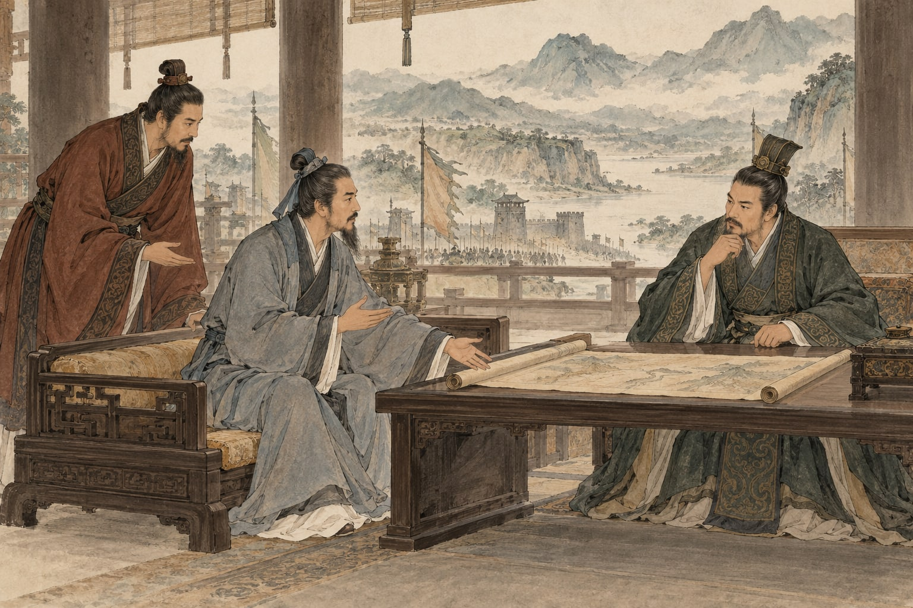

原文点有细线的字词，读音释义即现

慢读先看一幅画，再读一段文。
先看见差别，再想一想：同样的马，还能怎样安排？
画卷目录从任意一幕，走进故事
给一起读书的大人
六幕可以连读，也可以在“细察马力”停下来猜想。读后的小实验允许自己安排，再换条件比较；不要把记住一种次序当作已经理解。
白话、赏读和深入讨论按需展开。留给孩子自己的感受，不预设标准读后感。插画是依据文章展开的艺术想象；人物、衣饰、建筑与细节并非历史实景复原。
查看原文版本与资料说明 →停一停 · 你来发现
水墨插画为艺术想象 · 可用键盘 ← → 翻页
把六幕，连成一篇
田忌赛马
〔西汉〕司马迁 · 《史记》选段
文止于此，回味未止。
把字词，放回句子里
字词小笺
认一个字，也看它在这一句里做什么。
把意思，放回这一句话
数
忌数与齐诸公子：屡次，读 shuò。
不是数一数的 shǔ。
再
一不胜而再胜：两次获胜。
不要只理解成“又”。
孙子
本选段指孙膑，子是尊称。
不是《孙子兵法》的作者孙武。

合上书，还能带走什么
换个相对，重新看见
同样的马，
也许有不同的安排。
留下一句，属于自己的体会。
可以谈一次观察，也可以谈一次改变。先用原文说明你看见了什么。
只保存在当前浏览器中。
想聊得更深一点：只要换次序，就一定能赢吗？
如果对方最慢的马，也比田忌最快的马更快，会发生什么？先说出理由，再用下面的小实验检查。
聊过之后，再读一种理解
调整配对不改变马本来的快慢。它能否让总胜场增加，取决于双方能力的相对位置、对手次序以及怎样计算总胜负。读故事学到的是先看条件、再比较安排，不是遇到任何比赛都套同一串次序。
动手试一试：同样的马，怎样安排？
先排好三场，预测结果，再展开比较。每匹马只能出场一次，赢得至少两场的一方获胜。
这里用数字表示马力，数字越大跑得越快；数字是示意，原文没有给出具体速度。假设马力不变、对方顺序固定、每场只有胜负，暂不考虑赛道与临场发挥。
田忌：上 6、中 4、下 2。对方：上 7、中 5、下 3。
| 场次 | 对方出场 | 你为田忌安排 |
|---|---|---|
| 第一场 | 上等 · 7 | |
| 第二场 | 中等 · 5 | |
| 第三场 | 下等 · 3 |
这次你预测田忌能赢几场？先说理由，再点下面的按钮。
还没开始。先安排三匹马。
走近写下文字的人：司马迁
司马迁是西汉史学家，《史记》的作者。这段文字记述战国时期田忌与孙膑的故事。篇中“孙子”承接孙膑的经历，是对孙膑的尊称；这里节选赛马及荐贤部分。
原文与资料 →纸上
再读第一幕 →用六张纸条，讲清一次安排。
各写两组上、中、下。请家人按你说的摆放，再由你解释每一组关系和三场合计。换一种马力差距后，原来的理由还成立吗？
卷末 · 资料与制作
每一篇，都有文字的来处。
原文与版本
“田忌赛马”是本册便于阅读所用的选段题名，原文出自西汉司马迁《史记》卷六十五《孙子吴起列传》，故事发生在战国齐国。选取从“齐将田忌善而客待之”到“遂以为师”的连续文字，作为一个完整选段呈现。正文保留“君弟重射”的“弟”；把来源中“上、中、下、辈”多余的顿号整理为“上、中、下辈”。本册不是现代白话课文改写。
校核来源：维基文库：《史记》卷六十五；香港教育局：田忌赛马问题材料。查阅日期：2026 年 10 月 29 日。古文为公版作品；白话、释义、赏读与共读提示为本册重新组织。
读音与理解
本段“孙子”指孙膑；“数”读 shuò，“再”指两次，“卒”指最终。驷本指同驾一车的四匹马，也可泛指马匹。插画只帮助想象竞逐与人物关系，不复原具体赛制。书架朝代按作者归为西汉，关键词另记战国齐国。
六幅水墨画
插画使用内置 image_gen 工具生成。原图与完整提示词保存在本册制作文件中。水墨画帮助读者想象文章，人物、场所、器物是艺术表现，不是历史照片、科学图鉴或精确实验记录。
离线与书架
单文件 HTML 内含本册插画、样式和交互，可以单独阅读。保留原目录结构时可返回书架或切换篇目。来源链接需要网络。
孩子主动填写的话按篇尝试保存在当前浏览器。移动文件、更换浏览器、设备或隐私模式可能影响保存，请导出重要记录；记录不上传，也不会被打入阅读压缩包。书架不代表孩子已经学习或掌握。
回到封面 →